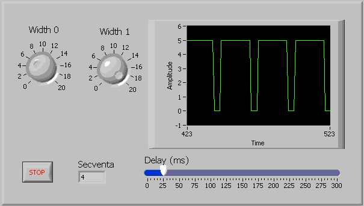

Pentru a dezvolta aplicatii mai complexe avem nevoie de structuri care sa iplementeze repetitiile unor parti din aplicatie.
Sunt implementate doua structuri repetitive:
Structura While Loop
Structura For Loop
Structura While Loop
Se gaseste in grupul Programming-->Structures-->While Loop
Aplicatiile in care la un moment dat trebuie sa repetam anumite parti ale aplicatiilor atata timp cat este indeplinita o
anumita conditie sunt realizate utilizand structura "While Loop"
Utilizarea structurii While Loop
Structuria "While Loop" este similara instructiunii "do while" din c++. Este folosita pentru a repeta atata timp cat o
conditie este indeplinita.
Am realizat in cursurile anterioare o aplicatie in care se folosea un generator de numere aleatoate si afisarea valorii
generate intr-un indicator numeric. Aplicatia era rulata in mod continuu, obtinandu-se astfel, afisarea continua a valorilor generate. Folosind
structura "While Loop" vom putea controla intervalul in care sa se afiseze repetitiv valorile generate nemaifiind nevoie de rulare continua.
Vom realiza aplicatia numita while_v0_v0 , aplicatie care se lanseaza de la
butonul "Run" nu de la butonul "Run Continuously"
Diagrama bloc va contine o structura "While Loop" in interiorul careia se include partea de aplicate ce trebuie repetata.
Dupa cum se observa repetitia se face pana cand se apasa butonul "Stop" buton care initial are valorea "True".
Dupa rularea aplicatiei, se genereaza o serie de valori aleatoare pana la apasarea butonului "Stop". Daca dorim
afisarea temporizata a valorilor generate va trebui sa includem in structura repetitiva o functie "Wait" aflata in grupul Functions-->Timing-->Wait,
realizand astfel aplicatia: while_v0_v1 .
In coltul stanga jos al structurii "While Loop" exista variabila i care contorizeaza iteratia curenta. Am putea afisa
valoarea acestei variabile in locul variabilei generate aleator while_v0_v2 . In acest caz, diagrama bloc
devine:
Reluam aplicatia care afiseaza un numar intreg de tipul U8 sub forma binara utilizand 8 Led-uri dar de data aceasta
numarul intreg va fi chiar variabila i folosita pentru iteratie intr-o structura "While Loop" while_v0_v3
Vom plasa deci in structura repetitiva aplicatia pentru afisare pe led-uri
Sa afisam acum o valoare crescatoare folosind un control de tip "Meter" while_v0_v4
Vom folosi variabila i pentru a afisa valori crescatoare pe "Meter"
Dupa cum se observa in diagrama bloc, a fost nevoie si de o temporizare, in caz contrar variatia lui i este foarte rapida si
nu vom observa decat valoarea finala.
Aceeasi metoda o putem utiliza pentru a afisa acum o valoare a functiei sinus folosind un control de tip "Waveform Chart"
while_v0_v5
In diagrama bloc vom folosi functia Sin aflata in grupul:Mathematics-->Elementary-->Trigonometric-->sin.
Pentru a afisa mai putine perioade in unitatea de tipm, contorul i a fost impartit cu 10.
Putem imbunatati aplicatia anterioara prin plasarea unor controale pentru a stabili sa zicem numarul de grade intre doua
puncte afisate si intarzierea. while_v0_v6
De aceasta data intarzierea nu mai este fixa, fiind data de valoarea controlului de tip "Slider" iar unghiul curent
in radiani este dat de relatia
i*90/(pi/2*x) unde x= numarul de grade intre doua puncte afisate.
Am realizat deci un generator de semnal sinusoidal. Pe acelasi principiu putem realiza un generator de semnal dreptunghiular.
while_v0_v7
aven nevoie de o functie care sa ne intoarca valoarea 1 sau 0. Daca utilizam functia modulo 2 asupra lui contorului i,
optinem succesiv valorile 1 si 0.
Latimea implsurilor se regleaza din controlul "Latime" care divide valoarea contorului i cu valoarea controlului
"Latime". Dupa operatia de impartire a trebuit sa convertim rezultatul intr-un numar intreg pe 64 biti altfel functia "modulo" nu ar mai fi dat
rezultat 1 sau 0.
Pentru a realiza un generator de semnal in treapta while_v0_v8
de forma:
este suficient sa schimbam functia "modulo" 2 cu "modulo" 5
Dupa acelasi principiu, pentru a realiza un generator de semnal "dinti de fierastrau"
while_v0_v9
de forma:
este suficient sa utilizam functia "modulo" n in care n sa fie suficient de mare pentru a ajunge la trepte de dimensiunea unui pixel, astfel panta
devine aproape limiara.
Este util de multe ori sa afisam datele in mod grafic sub forma de histograma. Urmatoarea aplicatie
while_v0_v10 utilizeaza controlul grafic "Wavwform Chart" setat in mod corespunzator pentru
a afisa o histograma.
Diagrama logica este extrem de simpla:
Efectul de histogram este obtinut doar din setarea corespunzatoare a controlul grafic "Wavwform Chart".
Aplicatia poate fi imbunatatita while_v0_v11 prin
atasarea unui control din care sa putem regla intarzierea intre doua valori afisate astfel:
Diagrama bloc va trebui sa utilizeze valoarea data de controlul "Delay" pentru a realiza o pauza intre valorile
generate.
Dupa cum se observa in diagrama bloc se trimit spre afisare valori 0 cu exceptia faptului cand restul impartirii
contorului i cu valoarea data de "Delay" este 0 deci la un numar multiplu al valorii data de "Delay".
Utilizarea variabilelor locale in structuri While Loop
Multe aplicatii nu se pot rezolva fara a utiliza variabile locale. De multe ori avem nevoie de variabile contor
suplimentare pentru a dezvolta aplicatii mai complexe. In aplicatiile anterioare ne-am "legat" tot timpul de variabila contor "i" a structurii
"While Loop". Vom incerca in aplicatiile urmatoare sa folosim variabile locale pentru a realiza aplicatii mai consistente.
O alta metoda pentru a obtine un generator de semnal "dinti de fierastrau" este utilizarea unei structuri decizonale care
sa valideze la iesire o valoare crescatoare, pana la valoarea de prag numita amplitudine maxima-Amax.
while_v0_v12
De data aceasta nu mai putem utiliza contorul i pentru ca de fiecare data cand se ajunge la valoarea de prag trebuie sa
reinitializam variabila cu 0, ceea ce nu sete posibil pentru variabila i. Vom utiliza deci o variabila locala numita "Ampl" variabila care pastreaza
amplitudinea curenta a semnalului.
Utilizand structura decizionala de tip "Selector", se furnizeaza tot timpul la iesire "Ampl", atata timp cat aceasta este
sub pragul stabilit.
Panta se stabileste din controlul "Panta" prin adunarea valorii data de acesta la amplitudinea curenta. Cu cat valoarea
"panta" este mai mare, cu atat amplitudinea curenta creste mai repede.
Revenim la generatorul de semnal dreptunghiular si vom utiliza variabile locale pentru a controla latimea impulsurilor
dreptunghiulare. while_v0_v13
Vom introduce o variabila locala numita "Contor_w" care se incrementeaza la fiecare trecere si in cazul in care este
atinsa valloarea setata de "Controlul" "Latime",aceasta se reinitializeaza la 0.
Se observa ca pana variabila "Contor_w" atinge valoarea "Latime/2" se trimite valoarea 0 la dispozitivul grafic de
afisare. In timpul cat variabila "Contor_w" este mai mare decat valoarea "Latime/2" se trimite valoarea 1 la dispozitivul grafic de
afisare
Trasarea figurilor geometrice utilizand structuri While Loop
Desenarea figurilor geometrice intr-un "Front Panel" este un proces repetitiv care presupune plasarea unui control de
tip "2D Picture" aflat in grupul: Classic-->Classic Graph-->Controls-->2D Picture. De fiecare data cand se deseneaza ceva pe acest control se adauga
vechiului continut, noul continut, asa incat desenarea este un proces repetitiv. Pentru inceput vom plasa un control de tip "2D Picture" in care vom
desena un dreptungi while_v0_v14 .
Pentru a desena un dreptungi, vom utiliza functia Draw Rect plasata in grupul:Functions-->Programming-->Graphics and Songs-->
Picture Functions-->Draw Rect. Aceasta functie necesita o serie de parametri. Pentru a intelege mai bine modul in care lucreaza aceasta functie, vom
furniza acesti parametrii de la niste controale situate pe "Front Panel". Pentru a trasa un dreptunghi, este nevoie de coordonatele punctului stanga
sus si dreapta jos. Functia mai are nevoie de un parametru care sa indice culoarea cu care se deseneaza, asa ca acest parapetru va fi furnizat de
controlul "Color Box" situat in grupul Functions-->Programming-->Graphics and Songs-->Picture Functions-->Color Box. Cel mai important parametru este
parametrul "Picture" parametru care precizeaza unde sa se deseneze dreptunghiul. Functia intoarec parametrul "New Picture", reprezentand parametrul
"Picture" la care se adauga dreptungiul precizat prin ceilalti parametri. In cazul in care se doreste o ca parametrul "New Picture" sa contina numai
dreptunghiul precizat, "Parametrului "Picture" trebuie sa i se atribuie constanta "Empty Picture" aflata in grupul Functions-->Programming-->Graphics and Songs-->
Picture Functions-->Empty Picture
Functia "Draw Rect" are nevoie de o singura structura care contine cei patru parapetri care reprezinta coordonatele
dreptunghiului, asa ca a fost necesata "impachetarea celor 4 parametrii utilizand o functie "Bundle" situata in grupul : Programming-->Cluster-->Bundle
La fiecare iteratie a structurii while, vechea "Picture" este stearsa si se redeseneaza un nou dreptunhi cu noi
parametrii stabiliti din controalele dispuse pe panoul frontal. In cazul in care vrem sa se pastreze vechiul continut, "New Picture" trebuie sa devina se
trimita la intrarea functiei pentru a se redesena peste vechiul continut. while_v0_v15 .
Avem nevoie de o variabila locala pentru a putea conecta iesirea functiei la intrarea ei.
Initializarea cariabilei locale "Picture" se face o singura data la inceputul aplicatiei astfel noile dreptunghiuri
trasate se aduna vechilor dreptunghiuri.
Vom realiza in continuare aplicatii similare pentru a desena elipse
while_v0_v16
Dupa cum se observa, pentru a desena o elipsa, s-a folosit functia :Functions-->Programming-->Graphics and Songs-->
Picture Functions-->Draw Round si s-au furnizat coordonatele unui dreptunghi in care va fi inscrisa elipsa. Pentru a desena un cerc, va trebui sa
furnizam deci coordonatele unui patrat.
Pentru a desena un cerc exista posibilitatea sa furnizam raza si coordonatele centrului cercului utilizand functia:
Functions-->Programming-->Graphics and Songs-->Picture Functions-->Draw Circle.
while_v0_v17
Pentru a desena o linie while_v0_v18 trebuiesc furnizati doar
doi parametrii care reprezinta coordonatele unui punct. Linia va fi trasata de la pozitia curenta la pozitia data de coordonate.
Deci pentru a trasa o linie trebuie mai intai sa ne pozitionam pe pozitia de start a liniei utilizand functia : Functions-->Programming-->Graphics and Songs-->
Picture Functions-->Move Pen si pe urma sa trasam o linie la coordonatele finale utilizand functia Functions-->Programming-->Graphics and Songs-->
Picture Functions-->Draw Line. In final trebuie sa furnizam tot patru parametri.
Coordonatele unui punct se dau tot in forma impachetata deci se va folosi iarasi o functie "Bundle"
Pentru a furniza coordonatele unui punct exista un control special numit:Const Cluster
while_v0_v19
Coordonatele unui punct se dau de data aceasta gata impachetate
Utilizarea limbajului C in diagrame bloc
De multe ori diagramele bloc devin complicate si stufoase. Solutia pentru realizarea unor aplicatii mai robuste, este
includerea de cod C in diagrame bloc. Acest lucru este posibil utilizand functia:Functions-->Programming-->Formula Node.
Aplicatia pentru simularea generatoarelor de semnal, devin mult mai simple folosind functii "Formula Node".
Sa reluam aolicatia pentru realizarea unui generator de semnal "dinti de fierastrau" realizand aplicatia:
while_v0_v20 bazata pe utilizarea functiei "Formula Node".
Similar cu aplicatia initiala, se va utiliza functia modulo numai ca de data aceasta apelata ca functie C
Functia de tip "Formula Node" utilizata are o variabila de intrare x si o variabila de iesire y. Aceste variabile
sunt utilizate in cadrul secventei de cod in C utilizata in interiorul structurii "Formula Node".
Secventa de cod in C utilizata in interiorul structurii "Formula Node", poate sa contina una sau mai multe linii de
program. Este cazul si aplicatiei while_v0_v21 in care se simuleaza un generator de
semnal dreptunghiular.
Se vor folosi doua variabile y si z . Variabila y va fi folosita pe post de contor iar z ca variabila de iesire avand
valoarea 0 sau 10 pentru a simula iesirea dreptunghiulara. Pe primele 10 valori ale lui y iesirea va fi 0 iar pe urmatoarele 10 valori ale lui y,
iesirea va avea valoarea 10. Pentru evidentiere, valaorea variabilei y a fost afisata intr-un control numeric.
Modul de functionare descris mai sus este mult mai concis exprimat de codul cuprins de structura "Formula node"
y=y+1;
if(y < 10)
z=0;
else
z=10;
if(y > 20)
y=0;
In aplicatia anterioara, latimea impulsului era fixa si anume egala cu 10 secvente, la fel si latimea perioadei
in care semnalul este 0. Punand doua controale putem controla latimea celor doua durate, obtinem astfel urmatoarea aplicatie:
while_v0_v22

Structura "Formula node", va trebui sa contina doua variabile de intrare prin care sa fie transmisa valoarea
celor doua controale care stabilesc latimile mentionate.
S-au folosit deci variabilele de intrare W0 si W1 pentru a pastra valorile furnizate de cele doua controale numerice